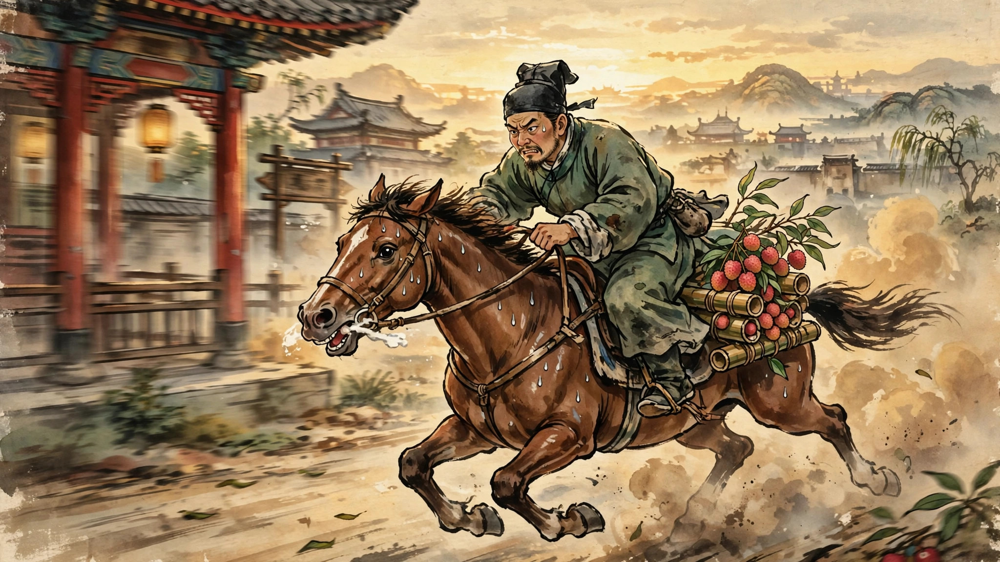

从中国最火的畅销作家身上我们能学到什么
我已经不看国产古装剧（甚至国产剧，以下统称“国剧”）很多年了，平时看最多的就是美剧，偶尔看看日剧和韩剧。原因很简单，国剧（尤其是近一二十年的）整体质量堪忧，各种乱象让人瞠目结舌：剧情悬浮空洞灌水，常识/逻辑/历史错误百出，各种磨皮零演技流量明星霸屏等等。但偶尔也会有些精品或者至少能看下去的。例如潘粤明的鬼吹灯系列，再就是这两年有越来越火趋势的马伯庸作品的部分影视改编版，如早两年的《长安十二时辰》和《显微镜下的大明》，和最近影视都在热播的《长安的荔枝》。

我这里不打算聊马伯庸的具体哪部作品，只谈谈我对他写作风格的一些个人看法和认识，以及我理解的他为什么这么火（而且越来越火）的原因。首先声明，我不是马的粉丝，会尽量客观评价他，而不在意他现在有多火。
很早就接触过马伯庸的作品了，记得最早看到的是殷商玛雅舰队啥的（具体书名不记得了就记得书名很长），还有三国背景的风起陇西（有剧版）。当时的第一印象是这作者脑洞很大，但文风有点啰嗦。后来发现他越来越火，尤其是历史题材的小说，很多被拍成影视剧。说他是中国目前影视改编最多以及最成功的畅销作家应该没人有异议吧。其在中国的风光，可能只有当年在美国的Stephan King能与之媲美。
最近两年完整看过他的两部小说，一个是民国背景的《大医》，另一个是西汉（南越）背景的《食南之徒》。客观上说，这两部比他早期的作品成熟很多，不论是叙事的流畅性逻辑性、历史细节的考据还是人物复杂性格的塑造方面，都堪称一流。
据我观察，他大多数的作品（尤其是历史题材）都至少有以下几个特点：1）灵感来自于史料记载的某个历史片段甚至瞬间；2）围绕上述史料扩写成一个完整（甚至长篇）的故事；3）进一步丰富细节，如加入支线及人物，加入段子笑料，增加可读性；4）紧扣现实，提供情绪价值。典型的例子就是影射现代职场的一些作品，如《太白金星有点烦》和最近的《长安的荔枝》。这类题材往往能够引起广大职（niu）场（ma)人的共鸣，所以尤其受欢迎。
我很难评价，这种写作风格好不好。但市场的反应说明这种写作风格至少在商业上是相当成功的。那么中国作家那么多，文笔好的不计其数，更不用说还有拿了诺贝尔奖的大佬。但马伯庸凭啥能够在书影两个行业都独领风骚这么多年呢？如果没有独门“绝活”的话，也必然有其过人之处吧。以下是我在阅读他作品及听他一些媒体访谈基础上得出的一点个人浅见。
首先，马伯庸非常肯下功夫在写作素材的准备上。每当起念写一本书，他都会从各个渠道搜集大量素材，如大量相关阅读以及实地走访。在真正动笔之前，不厌其烦地收集和积累素材，准备工作做足，下笔才能一泻千里（划掉）一蹴而就。
其次，他在写作中很善于紧密联系现实，借古喻今。如果写历史只局限在历史里，那和教科书有啥分别？同理，当年明月的成功不在于他历史功底有多深厚，而在于他用现代人的思维和语言写古代，大幅拉近历史和现实的距离。以长安的荔枝为例，你以为他只是扩写了一句唐诗“一骑红尘妃子笑”而已，其实他写的是古代职场也有丛林规则。很多当今牛马从李善德身上看到了自己的影子，不代入不共情才怪。
另外，他在多次访谈中谈到自己的灵感从何而来。其实很简单，一方面是大量阅读，所谓“读书破万卷，下笔如有神”，有输入才有输出。另一方面，是有新想法新念头马上记下来，不管当时觉得多么微不足道多么琐碎，其中一条也许就是未来某本书的灵感来源。所谓“机会总是青睐有准备的人”即是如此。
那么，作为普通人的我们可以从他身上学到什么，可以复制他的成功吗？我觉得大可不必目标定得这么高。马伯庸的成功有他自身努力和方法得当的原因，也有很大程度是运气的原因。因为中国之大，文学才能在他之上的不在少数，但为何只有他这么成功？道理可能就是实力加运气这么简单。而运气这东西是没法复制的，我们可以做的是，吸收他的一些好的做法和经验，来提升自己。每天哪怕进步一点点，也是个人的成功。